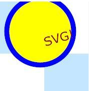
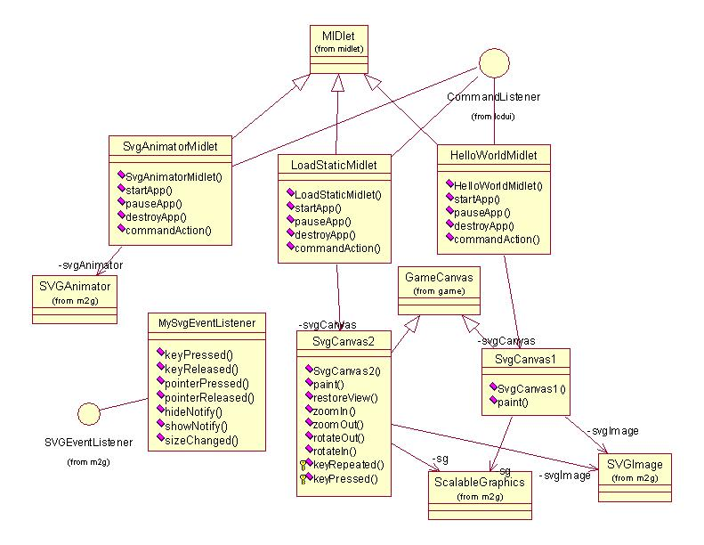

|
||||||||||
| PREV PACKAGE NEXT PACKAGE | FRAMES NO FRAMES | |||||||||
See:
Description
| Class Summary | |
| HelloWorldMidlet | Simple midlet that displays a static SVG file. |
| LoadStaticMidlet | Simple midlet that displays a static SVG file. |
| MySvgEventListener | Simple SVGEventListener with no action taken in event handling methods. |
| SvgAnimatorMidlet | Simple midlet that displays an animation using SVGAnimator, It also demonstrates how SVGEventListener works. |
| SvgCanvas1 | Simple canvas that uses JSR-226 to render SVG content. |
| SvgCanvas2 | Simple canvas that uses JSR-226 to render SVG content. |
This example contains three midlets that illustrate the use of Scalable Vector Graphics(SVG) provided by the Mobile 2D(M2G) API.
This example contains three midlets that illustrate the use of Scalable Vector Graphics(SVG) provided by the Mobile 2D(M2G) API. The three midlets are the SvgAnimatorMidlet, LoadStaticMidlet, and the HelloWorldMidlet.
The example midlets make use of the standard MIDP application framework and LCDUI API. The reader should be familiar with these areas before attempting to understand this example.
This example uses MIDP 2.0.
The example is built using the standard method for building and running as described in Building and running the examples.
The following classes should be included in the jar:
com.nokia.midp.examples.svg.*
Two additional SVG content files are resources that are included in the jar file:
The following images depict the three example midlets in operation.
- content2.svg
- content3.svg

The M2G API provides the methods to create and render vector images. The API also provides for graphic animation.
The following list and class diagram identify the classes used in this example.
Application classes
- HelloWorldMidlet - Displays a static SVG image.
- LoadStaticMidlet - Loads and displays content and shows you how to perform zoom and rotate operations.
- SvgAnimatorMidlet - Demonstrates the feature of SVGAnimator class allowing you to playback animated SVG content.
System classes

- SVGImage - A class that represents an SVG image conforming to W3C SVG Tiny 1.1 Profile
- SvgAnimator - This class handles rendering of updates and animations in a SVGImage to a target component.
- ScalableGraphics - A fundamental class for 2D rendering
HelloWorldMidlet
The HelloWorldMidlet creates an object of type SvgCanvas1 and then displays it. The SvgCanvas1 instance sets up an instance of ScalableGraphics, creates an empty SVGImage, and creates graphical elements appending them to the image document to construct a smiley face.
LoadStaticMidlet
The LoadStaticMidlet creates an object of type SvgCanvas2 and then displays it. The midlet also sets up the following commands:
The SvgCanvas2 instance sets up an instance of ScalableGraphics, uses the content2.svg resource file to create an SVGImage, and sets the width and height of the SVGImage document to match the screen capabilities of the midlet. The SvgCanvas2 instance also implements methods to perform image manipulations that correspond to the commands that the LoadStaticMidlet supports. The result is that the midlet displays an image that may be manipulated in various ways by the user.
- Zoom In
- Zoom Out
- Rotate Counter
- Rotate Clockwise
- Restore View
- Exit
SvgAnimatorMidlet
The SvgAnimatorMidlet uses the content3.svg resource file to create an SVGImage. The midlet then creates an instance of SVGAnimator using the previously created SVGImage. The midlet also sets up the following commands:
Within the command handler of the midlet the instance of the SVGAnimator is used to perform the requested command operation. The result is that the midlet displays an animation that is controllable by the user.
- Play
- Pause
- Stop
- Increase Frame Rate
- Decrease Frame Rate
- Exit
This example has demonstrated how to use Scalable Vector Graphics(SVG) provided by the Mobile 2D(M2G) API to load and displays a static SVG image file, load and display content and how to perform zoom and rotate operations, and playback animated SVG content.
|
||||||||||
| PREV PACKAGE NEXT PACKAGE | FRAMES NO FRAMES | |||||||||